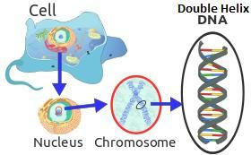
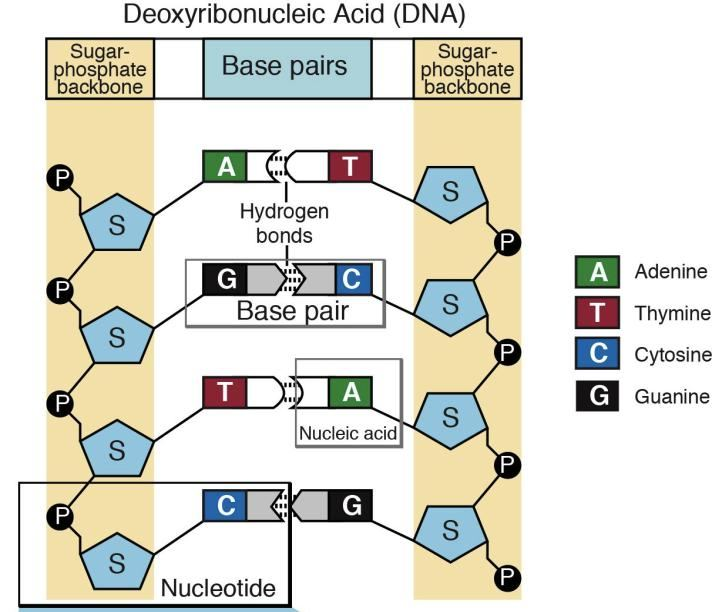
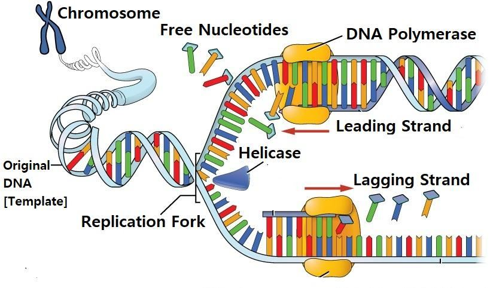
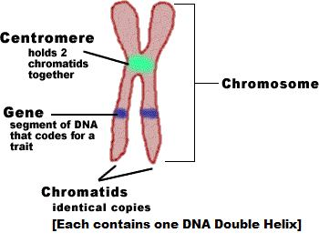
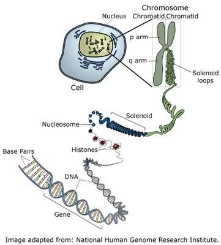

The Earth took a long time to become suitable for complex creatures like us. It received elements heavier than silicon from supernova explosions, developed a suitable atmosphere, and acquired water to fill its oceans. Over time, continents drifted apart, and mountain ranges formed. Eventually, the globe reached its present shape approximately seventy million years ago. After the formation of mountain ranges, clouds spread across the land, bringing adequate rainfall that replenished groundwater and gave rise to rivers when flowering trees appeared. The Cambrian Explosion, often referred to as the 'Big Bang' of biological evolution, began 539 million years ago. During this period, diverse animal species suitable for the present world started to emerge. And He scattered in it from every animals; and We send down from the sky water, so it germinated us therein—all from Noble Pairs (min kullay zawgin kareem).
পৃথিবী আমাদের মতো জটিল প্রাণীদের উপযোগী হতে অনেক সময় নিয়েছে। এটি সুপারনোভা বিস্ফোরণ থেকে সিলিকনের চেয়ে ভারী উপাদানগুলি পেয়েছে, একটি উপযুক্ত বায়ুমণ্ডল তৈরি করেছে এবং এর মহাসাগরগুলি পূরণ করার জন্য জল অর্জন করেছে। সময়ের সাথে সাথে, মহাদেশগুলি বিচ্ছিন্ন হয়ে যায় এবং পর্বতশ্রেণী গঠিত হয়। অবশেষে, পৃথিবী প্রায় সত্তর মিলিয়ন বছর আগে তার বর্তমান আকারে পৌঁছেছিল। পর্বতশ্রেণী গঠনের পর, মেঘ ভূমি জুড়ে ছড়িয়ে পড়ে, পর্যাপ্ত বৃষ্টিপাত এনেছিল যা ভূগর্ভস্থ জল পুনরায় পূরণ করে এবং যখন ফুলের গাছ দেখা দেয় তখন নদীগুলির জন্ম দেয়। ক্যামব্রিয়ান বিস্ফোরণ, প্রায়শই জৈবিক বিবর্তনের 'বিগ ব্যাং' হিসাবে উল্লেখ করা হয়, 539 মিলিয়ন বছর আগে শুরু হয়েছিল। এই সময়ের মধ্যে, বর্তমান বিশ্বের উপযোগী বিভিন্ন প্রাণী প্রজাতির উদ্ভব হতে থাকে। অতঃপর তিনি তাতে বিক্ষিপ্ত করলেন প্রত্যেক প্রাণী থেকে। এবং আমরা আকাশ থেকে পানি বর্ষণ করি, ফলে তা আমাদেরকে তাতে অঙ্কুরিত করে- সবই নোবেল পেয়ার (মিন কুল্লে জাওগিন কারীম) থেকে।
Remarks:
মন্তব্য:
The verse is translated word for word. Animals are scattered across the Earth and depend on plants. Allah provides sweet water to the plants through rain, enabling them to germinate. In traditional translations, the term 'Noble Pair' mentioned in the verse is often interpreted as a 'pair of male and female animals.' However, in this verse, 'Noble Pairs' are also associated with the plants. Only about 20% of trees separate male and female parts on completely different trees, where one tree is strictly female and the other strictly male. And there are many single-celled organisms that do not have distinct male or female sexes; they reproduce through replication. The single-celled plants, like bacteria, do not have male or female sexes. A bacterium reproduces by dividing to produce two identical offspring. Then, what are these 'Noble Pairs' mentioned in the verse that cause plants to germinate? It is evident that the 'Noble Pairs' mentioned in the verses under discussion refers to the double-helix DNA molecules, which produce all living creatures, including plants and animals, as the verse under discussion state: ―And He scattered in it from every animals; and We send down from the sky water, so it germinated us therein—all from Noble Pairs (min kullay zawgin kareem). FIGURE 31.2: Double Helix DNA Molecule

চিত্র 31_2 / Figure 31_2
শ্লোকটি শব্দের জন্য অনুবাদ করা হয়েছে। প্রাণীরা পৃথিবী জুড়ে ছড়িয়ে ছিটিয়ে রয়েছে এবং উদ্ভিদের উপর নির্ভর করে। আল্লাহ বৃষ্টির মাধ্যমে গাছপালাকে মিষ্টি পানি সরবরাহ করেন, তাদের অঙ্কুরোদগম করতে সক্ষম করে। ঐতিহ্যগত অনুবাদে, আয়াতে উল্লিখিত 'নোবেল পেয়ার' শব্দটিকে প্রায়ই 'পুরুষ ও স্ত্রী প্রাণীর জোড়া' হিসেবে ব্যাখ্যা করা হয়। যাইহোক, এই আয়াতে উদ্ভিদের সাথে 'নোবেল পেয়ারস'ও যুক্ত হয়েছে। মাত্র 20% গাছ সম্পূর্ণ ভিন্ন গাছে পুরুষ ও স্ত্রী অংশকে আলাদা করে, যেখানে একটি গাছ কঠোরভাবে স্ত্রী এবং অন্যটি কঠোরভাবে পুরুষ। এবং অনেক এককোষী জীব আছে যাদের আলাদা কোন পুরুষ বা মহিলা লিঙ্গ নেই; তারা প্রতিলিপি মাধ্যমে পুনরুত্পাদন. ব্যাকটেরিয়ার মতো এককোষী উদ্ভিদের পুরুষ বা স্ত্রী লিঙ্গ থাকে না। একটি ব্যাকটেরিয়া দুটি অভিন্ন সন্তান উৎপন্ন করতে বিভক্ত হয়ে পুনরুৎপাদন করে। তাহলে, আয়াতে উল্লিখিত এই 'নোবেল পেয়ার'গুলো কিসের কারণে উদ্ভিদের অঙ্কুরোদগম হয়? এটা স্পষ্ট যে আলোচনার অধীন আয়াতে উল্লেখিত 'নোবেল পেয়ারস' বলতে ডাবল-হেলিক্স ডিএনএ অণুকে বোঝায়, যা উদ্ভিদ এবং প্রাণী সহ সমস্ত জীবিত প্রাণী তৈরি করে, কারণ আলোচনার অধীন আয়াতে বলা হয়েছে: “এবং তিনি প্রত্যেক প্রাণী থেকে এটিতে ছড়িয়ে দিয়েছেন; আর আমরা আকাশ থেকে পানি বর্ষণ করি, ফলে তা আমাদেরকে তাতে অঙ্কুরিত করে- সবই নোবেল পেয়ার (মিন কুল্লে জাওগিন কারীম) থেকে। চিত্র 31.2: ডাবল হেলিক্স ডিএনএ অণু
চিত্র 31_2 / Figure 31_2
Two strands joined side by side form a double-helix DNA molecule, making it a pair.
দুটি স্ট্র্যান্ড পাশাপাশি যুক্ত হয়ে একটি ডাবল-হেলিক্স ডিএনএ অণু তৈরি করে, এটি একটি জোড়া তৈরি করে।
FIGURE 31.3: DNA Double Helix

চিত্র 31_3 / Figure 31_3
চিত্র 31.3: DNA ডাবল হেলিক্স
চিত্র 31_3 / Figure 31_3
A human cell, though not visible without a microscope, contains 23 pairs of chromosomes in its nucleus. Each chromosome is primarily composed of a double-helix DNA molecule. The concept of 'pairs,' which can be related to the 'double-helix DNA molecule,' is mentioned in many verses of the Quran. In the following, I will discuss several verses under the following headings: 1. Noble Pair 2. Attractive Pair 3. Pairs for Plants 4. Pairs for All 5. Pairs and Human Body
একটি মানব কোষ, যদিও একটি মাইক্রোস্কোপ ছাড়া দৃশ্যমান নয়, তার নিউক্লিয়াসে 23 জোড়া ক্রোমোজোম রয়েছে। প্রতিটি ক্রোমোজোম প্রাথমিকভাবে একটি ডাবল-হেলিক্স ডিএনএ অণু দ্বারা গঠিত। 'জোড়া' ধারণা, যা 'ডাবল-হেলিক্স ডিএনএ অণু'-এর সাথে সম্পর্কিত হতে পারে, কুরআনের অনেক আয়াতে উল্লেখ করা হয়েছে। নীচে, আমি নিম্নলিখিত শিরোনামের অধীনে বেশ কয়েকটি আয়াত নিয়ে আলোচনা করব: 1. নোবেল জুটি 2. আকর্ষণীয় জুটি 3. উদ্ভিদের জন্য জোড়া 4. সকলের জন্য জোড়া 5. জোড়া এবং মানবদেহ
1. Noble Pair
1. Noble Pair
The double-helix DNA molecule is referred to as the 'Noble Pair' in the following verse as well. The verse is often translated in a way that deviates from its intended meaning, with the 'pairs' interpreted as male-female couples of animals. I have provided a word-for-word translation of the verse to clarify its true meaning:
ডাবল-হেলিক্স ডিএনএ অণুকে নিম্নলিখিত শ্লোকেও 'নোবল পেয়ার' হিসাবে উল্লেখ করা হয়েছে। শ্লোকটি প্রায়শই এমনভাবে অনুবাদ করা হয় যা এর উদ্দেশ্য থেকে বিচ্যুত হয়, 'জোড়া'-কে প্রাণীর পুরুষ-মহিলা যুগল হিসাবে ব্যাখ্যা করা হয়। আমি আয়াতটির প্রকৃত অর্থ স্পষ্ট করার জন্য একটি শব্দ-শব্দ অনুবাদ প্রদান করেছি:
―Do they not look at the Earth, how many we grow in it! All from the Noble Pairs (Min kullay zawjin kareemin).‖ [Al Quran 26:7]
- তারা কি পৃথিবীর দিকে তাকায় না, আমরা তাতে কত জন্মাই! সবই নোবেল পেয়ার থেকে (মিন কুল্লে জাওজিন কারিমিন)।'' [আল কুরআন ২৬:৭]
To produce a baby tiger, a noble tiger and a noble tigress are not required. Similarly, one does not need a noble rooster and a noble hen to produce a chicken. Therefore, the 'Noble Pair' (Zawjin Kareemin) does not refer to a male-female couple of animals; rather, it refers to the double-helix DNA molecules, which alone have the ability to produce baby tigers, chickens, and all living creatures in the world. It is the program of life. This is why the molecule is regarded as noble. A double-helix DNA molecule is a long linear polymer. A polymer is a large molecule composed of many repeated subunits, known as nucleotides (see figure below).
একটি বাঘের বাচ্চা তৈরি করতে, একটি মহৎ বাঘ এবং একটি মহৎ বাঘের প্রয়োজন হয় না। একইভাবে, একটি মুরগি উৎপাদনের জন্য একটি মহৎ মোরগ এবং একটি মহৎ মুরগির প্রয়োজন হয় না। অতএব, 'নোবেল পেয়ার' (জাওজিন কারিমিন) পশুদের একটি পুরুষ-মহিলা দম্পতিকে নির্দেশ করে না; বরং, এটি ডাবল-হেলিক্স ডিএনএ অণুগুলিকে বোঝায়, যা একা বাঘ, মুরগি এবং বিশ্বের সমস্ত জীবন্ত প্রাণী তৈরি করার ক্ষমতা রাখে। এটা জীবনের কর্মসূচী। এই কারণেই অণুকে মহৎ বলে গণ্য করা হয়। একটি ডাবল-হেলিক্স ডিএনএ অণু একটি দীর্ঘ রৈখিক পলিমার। একটি পলিমার হল একটি বৃহৎ অণু যা বহু পুনরাবৃত্ত সাবুনিটের সমন্বয়ে গঠিত, যা নিউক্লিওটাইড নামে পরিচিত (নীচের চিত্র দেখুন)।
FIGURE 31.4: Nucleotide

চিত্র 31_4 / Figure 31_4
চিত্র 31.4: নিউক্লিওটাইড
চিত্র 31_4 / Figure 31_4
A nucleotide consists of three subunits: a nitrogenous base, a five-carbon sugar, and at least one phosphate group.
একটি নিউক্লিওটাইডে তিনটি সাবুনিট থাকে: একটি নাইট্রোজেনাস বেস, একটি পাঁচ-কার্বন চিনি এবং অন্তত একটি ফসফেট গ্রুপ।
FIGURE 31.5: DNA Double Helix A series of nucleotides forms a strand. Two strands joined side by side create a double-helix DNA molecule. The structural arrangement of a double-helix DNA molecule resembles an immensely long ladder, with the rungs weakly connected in the middle by hydrogen bonds. The sugar-phosphate backbones provide support to the molecule, while the genetic code is produced by the arrangement of base pairs (AT, GC, TA, CG). A gene is a segment of a DNA strand that codes for a specific protein. For example, one gene produces insulin, which helps the body regulate blood sugar levels. Genes are the basic units of genetics. A human being has about 23,000 genes, but they account for only about 2 percent of a Double Helix DNA Molecule. The function of the remaining 98 percent is not fully understood and is often referred to as junk DNA. With only 20 types of amino acids available in a cell, a double-helix DNA molecule can produce over 1,000 types of proteins required for the body. It can also generate more than 2,000 types of enzymes. Moreover, it has the ability to replicate cells and form a human body from a single-cell zygote. If the codes of a genome were written in books, the pile of books would be taller than a mountain. Therefore, the double-helix DNA molecule is referred to as the 'Noble Pair' in the Quran.

চিত্র 31_5 / Figure 31_5
চিত্র 31.5: ডিএনএ ডাবল হেলিক্স নিউক্লিওটাইডের একটি সিরিজ একটি স্ট্র্যান্ড গঠন করে। দুটি স্ট্র্যান্ড পাশাপাশি যুক্ত হয়ে একটি ডাবল-হেলিক্স ডিএনএ অণু তৈরি করে। একটি ডাবল-হেলিক্স ডিএনএ অণুর কাঠামোগত বিন্যাস একটি বিশাল লম্বা সিঁড়ির মতো, যার দন্ডগুলি হাইড্রোজেন বন্ড দ্বারা মাঝখানে দুর্বলভাবে সংযুক্ত থাকে। চিনি-ফসফেট ব্যাকবোনগুলি অণুকে সমর্থন প্রদান করে, যখন জেনেটিক কোড বেস জোড়া (AT, GC, TA, CG) এর বিন্যাস দ্বারা উত্পাদিত হয়। একটি জিন হল একটি ডিএনএ স্ট্র্যান্ডের একটি অংশ যা একটি নির্দিষ্ট প্রোটিনের জন্য কোড করে। উদাহরণস্বরূপ, একটি জিন ইনসুলিন তৈরি করে, যা শরীরকে রক্তে শর্করার মাত্রা নিয়ন্ত্রণে সহায়তা করে। জিন হল জেনেটিক্সের মৌলিক একক। একজন মানুষের প্রায় 23,000 জিন থাকে, কিন্তু তারা একটি ডাবল হেলিক্স ডিএনএ অণুর মাত্র 2 শতাংশের জন্য দায়ী। অবশিষ্ট 98 শতাংশের কার্যকারিতা সম্পূর্ণরূপে বোঝা যায় না এবং প্রায়ই জাঙ্ক ডিএনএ হিসাবে উল্লেখ করা হয়। একটি কোষে মাত্র 20 ধরনের অ্যামিনো অ্যাসিড পাওয়া যায়, একটি ডাবল-হেলিক্স ডিএনএ অণু শরীরের জন্য প্রয়োজনীয় 1,000 ধরনের প্রোটিন তৈরি করতে পারে। এটি 2,000 টিরও বেশি ধরণের এনজাইম তৈরি করতে পারে। অধিকন্তু, এটি কোষের প্রতিলিপি এবং একটি একক-কোষ জাইগোট থেকে মানবদেহ গঠন করার ক্ষমতা রাখে। যদি জিনোমের কোডগুলো বইয়ে লেখা থাকতো তাহলে বইয়ের স্তূপ পাহাড়ের চেয়েও লম্বা হতো। তাই ডাবল-হেলিক্স ডিএনএ অণুকে কুরআনে 'নোবেল পেয়ার' হিসেবে উল্লেখ করা হয়েছে।
চিত্র 31_5 / Figure 31_5
2. Attractive Pair
2. আকর্ষণীয় জুটি
In the following verse, the double-helix DNA molecule is called ―Attractive Pairs‖ (Zawgin Baheej): ―And the earth; We have spread it out, and set thereon mountains standing firm, and grown therein every kind from Attractive Pair (Zawgin Baheej) …‖ [Al Quran 50:7-9]
নিম্নলিখিত আয়াতে, ডাবল-হেলিক্স ডিএনএ অণুকে বলা হয়েছে "আকর্ষণীয় জোড়া" (জাওগিন বাহিজ): "এবং পৃথিবী; আমরা একে বিস্তৃত করেছি এবং তার উপর পর্বত স্থাপন করেছি দৃঢ়ভাবে, এবং তাতে আকর্ষণীয় জোড়া (জাওগিন বাহিজ) থেকে উৎপন্ন করেছি ..." [আল কুরআন 50:7-9]
In a double-helix DNA molecule, two chains of nucleotides (strands) are held together by weak hydrogen bonds. These bonds do not function like glue but rather attract like magnets. This allows the strands to separate easily when needed, without causing any damage to the nucleotides. Thus, the strands are both stable and easily separable. A single round of DNA replication occurs before all cell divisions. DNA replication is the process of producing two identical replicas from one original double-helix DNA molecule. This biological process takes place in all living organisms and serves as the foundation for biological inheritance.
একটি ডাবল-হেলিক্স ডিএনএ অণুতে, নিউক্লিওটাইডের দুটি চেইন (স্ট্র্যান্ড) দুর্বল হাইড্রোজেন বন্ধন দ্বারা একসাথে থাকে। এই বন্ধনগুলি আঠার মতো কাজ করে না বরং চুম্বকের মতো আকর্ষণ করে। এটি নিউক্লিওটাইডগুলির কোনও ক্ষতি না করেই প্রয়োজনের সময় স্ট্র্যান্ডগুলিকে সহজেই আলাদা করতে দেয়। এইভাবে, strands উভয় স্থিতিশীল এবং সহজে বিভাজ্য হয়. ডিএনএ প্রতিলিপির একটি একক রাউন্ড সমস্ত কোষ বিভাজনের আগে ঘটে। ডিএনএ প্রতিলিপি হল একটি মূল ডাবল-হেলিক্স ডিএনএ অণু থেকে দুটি অভিন্ন প্রতিলিপি তৈরি করার প্রক্রিয়া। এই জৈবিক প্রক্রিয়াটি সমস্ত জীবন্ত প্রাণীর মধ্যে সঞ্চালিত হয় এবং জৈবিক উত্তরাধিকারের ভিত্তি হিসাবে কাজ করে।
FIGURE 31.6: DNA Replication During DNA replication, the double helix gets uncoiled, and the strands get separated. Each strand acts as a template for the next strand. Bases are matched to synthesize the new partner strand. The partner strand is produced with nucleotides available in cytoplasm. In the process of mitosis, DNA replication ensures the segregation of chromosomes and the formation of two nuclei within the cell. Subsequently, the cell divides, producing two genetically identical cells.

চিত্র 31_6 / Figure 31_6
চিত্র 31.6: ডিএনএ প্রতিলিপি ডিএনএ প্রতিলিপির সময়, ডাবল হেলিক্সটি কুঁচকে যায় এবং স্ট্র্যান্ডগুলি পৃথক হয়ে যায়। প্রতিটি স্ট্র্যান্ড পরবর্তী স্ট্র্যান্ডের জন্য একটি টেমপ্লেট হিসাবে কাজ করে। নতুন অংশীদার স্ট্র্যান্ড সংশ্লেষিত করার জন্য ভিত্তিগুলি মিলেছে৷ পার্টনার স্ট্র্যান্ড সাইটোপ্লাজমে উপলব্ধ নিউক্লিওটাইডের সাথে উত্পাদিত হয়। মাইটোসিস প্রক্রিয়ায়, ডিএনএ প্রতিলিপি ক্রোমোজোমের পৃথকীকরণ এবং কোষের মধ্যে দুটি নিউক্লিয়াস গঠন নিশ্চিত করে। পরবর্তীকালে, কোষটি বিভক্ত হয়ে দুটি জিনগতভাবে অভিন্ন কোষ তৈরি করে।
চিত্র 31_6 / Figure 31_6
FIGURE 31.7; Chromatids and Chromosome

চিত্র 31_7 / Figure 31_7
চিত্র 31.7; ক্রোমাটিড এবং ক্রোমোজোম
চিত্র 31_7 / Figure 31_7
A chromosome in its unreplicated state consists of one double-helix DNA molecule. But, during DNA replication (just before cell division), a chromosome is composed of two identical sister chromatids, and each chromatid contains one double-helix DNA molecule. These chromatids are joined at a region called the centromere. Unreplicated chromosome: One double-helix DNA molecule. Replicated chromosome (two chromatids): Two double-helix DNA molecules (one per chromatid). A human double-helix DNA molecule is six feet long approximately. It is wound around proteins called histones, which provide structural support and help regulate the activities of the molecule.
একটি ক্রোমোজোম তার অনুলিপিহীন অবস্থায় একটি ডাবল-হেলিক্স ডিএনএ অণু নিয়ে গঠিত। কিন্তু, ডিএনএ প্রতিলিপির সময় (কোষ বিভাজনের ঠিক আগে), একটি ক্রোমোজোম দুটি অভিন্ন বোন ক্রোমাটিড দিয়ে গঠিত এবং প্রতিটি ক্রোমাটিডে একটি ডাবল-হেলিক্স ডিএনএ অণু থাকে। এই ক্রোমাটিডগুলি সেন্ট্রোমিয়ার নামে একটি অঞ্চলে যুক্ত হয়। অনুলিপিবিহীন ক্রোমোজোম: একটি ডাবল-হেলিক্স ডিএনএ অণু। প্রতিলিপিকৃত ক্রোমোজোম (দুটি ক্রোমাটিড): দুটি ডাবল-হেলিক্স ডিএনএ অণু (ক্রোমাটিড প্রতি একটি)। একটি মানুষের ডাবল-হেলিক্স ডিএনএ অণু প্রায় ছয় ফুট লম্বা। এটি হিস্টোন নামক প্রোটিনের চারপাশে ক্ষতবিক্ষত, যা গঠনগত সহায়তা প্রদান করে এবং অণুর ক্রিয়াকলাপ নিয়ন্ত্রণে সহায়তা করে।
FIGURE 31.8: The wrapping of DNA molecule The initial wrapping of a double-helix DNA molecule around histones forms nucleosomes. These nucleosomes further coil into solenoids, and additional coiling of solenoids results in the formation of a chromatid (see figure above). In another process, meiosis, reproductive cells are produced with a haploid set of chromosomes.

চিত্র 31_8 / Figure 31_8
চিত্র 31.8: ডিএনএ অণুর মোড়ক হিস্টোনের চারপাশে একটি ডাবল-হেলিক্স ডিএনএ অণুর প্রাথমিক মোড়ক নিউক্লিওসোম গঠন করে। এই নিউক্লিওসোমগুলি আরও সোলেনয়েডে কুণ্ডলী করে, এবং সোলেনয়েডগুলির অতিরিক্ত কুণ্ডলীকরণের ফলে একটি ক্রোমাটিড তৈরি হয় (উপরের চিত্রটি দেখুন)। আরেকটি প্রক্রিয়ায়, মিয়োসিস, প্রজনন কোষগুলি ক্রোমোজোমের হ্যাপ্লয়েড সেটের সাথে উত্পাদিত হয়।
চিত্র 31_8 / Figure 31_8
―The Creator of the Skies and Lands, He has made for you Pairs (DNA Double Helix) from among yourselves and Pairs (DNA Double Helix) among cattle; by this means does He multiply you—there is nothing whatever like unto Him, and He is the One that hears and sees.‖ [Al Quran 42:11]
- আকাশ ও ভূমির স্রষ্টা, তিনি তোমাদের জন্য তোমাদের নিজেদের মধ্য থেকে জোড়া (ডিএনএ ডাবল হেলিক্স) এবং গবাদি পশুদের মধ্যে জোড়া (ডিএনএ ডাবল হেলিক্স) তৈরি করেছেন; এর মাধ্যমে তিনি তোমাদের বৃদ্ধি করেন-তাঁর মত কিছুই নেই এবং তিনিই শোনেন ও দেখেন।'' [আল কুরআন 42:11]
In the above verse, cattle are mentioned to clarify that the verse is not referring to male-female pairs, as cattle do not form pairs. The verse clearly states, "by this means does He multiply you," indicating that it is referring to haploid chromosomes. Each haploid chromosome contains a double-helix DNA molecule. These haploid chromosomes are carried by reproductive cells, such as sperm.
উপরের আয়াতে গবাদি পশুর কথা উল্লেখ করা হয়েছে স্পষ্ট করার জন্য যে আয়াতটি পুরুষ-মহিলা জোড়ার কথা উল্লেখ করছে না, কারণ গবাদিপশু জোড়া গঠন করে না। শ্লোকটি স্পষ্টভাবে বলেছে, "এই মাধ্যমে তিনি আপনাকে সংখ্যাবৃদ্ধি করেন," ইঙ্গিত করে যে এটি হ্যাপ্লয়েড ক্রোমোজোমকে নির্দেশ করছে। প্রতিটি হ্যাপ্লয়েড ক্রোমোজোমে একটি ডাবল-হেলিক্স ডিএনএ অণু থাকে। এই হ্যাপ্লয়েড ক্রোমোজোমগুলি প্রজনন কোষ দ্বারা বহন করা হয়, যেমন শুক্রাণু।
3. The Pair for both Plants and Animals
3. উদ্ভিদ এবং প্রাণী উভয়ের জন্য জুটি
"That has created Pairs (double-helix DNA molecule) in all things, and has made for you ships and cattle on which you ride‖ [Al Quran 43:12] In ancient times, ships were made of wood. The genomes of a tree and an animal have the same chemical composition and basic structure, but the genetic codes differ: one code creates a horse, while another code creates a tree. So, the pair that can produce both cattle and wood for ocean-going ships can only be double-helix DNA molecules. Therefore, by 'Pair,' the above verse refers to what can only be a double-helix DNA molecule.
"এটি সমস্ত জিনিসের মধ্যে জোড়া (ডাবল-হেলিক্স ডিএনএ অণু) তৈরি করেছে, এবং আপনার জন্য জাহাজ এবং গবাদি পশু তৈরি করেছে যার উপর আপনি চড়তেন" [আল কুরআন 43:12] প্রাচীনকালে, জাহাজগুলি কাঠের তৈরি ছিল। একটি গাছ এবং একটি প্রাণীর জিনোম একই রাসায়নিক গঠন এবং মৌলিক গঠন, কিন্তু একটি ঘোড়ার কোড একটি জিন কোড তৈরি করে: গাছ তাই, যে জোড়াটি সমুদ্রগামী জাহাজের জন্য গবাদি পশু এবং কাঠ উভয়ই তৈরি করতে পারে তা কেবল ডাবল-হেলিক্স ডিএনএ অণু হতে পারে, তাই, 'পেয়ার' দ্বারা উপরের আয়াতটি কেবলমাত্র একটি ডাবল-হেলিক্স ডিএনএ অণু হতে পারে।
Note:
দ্রষ্টব্য: